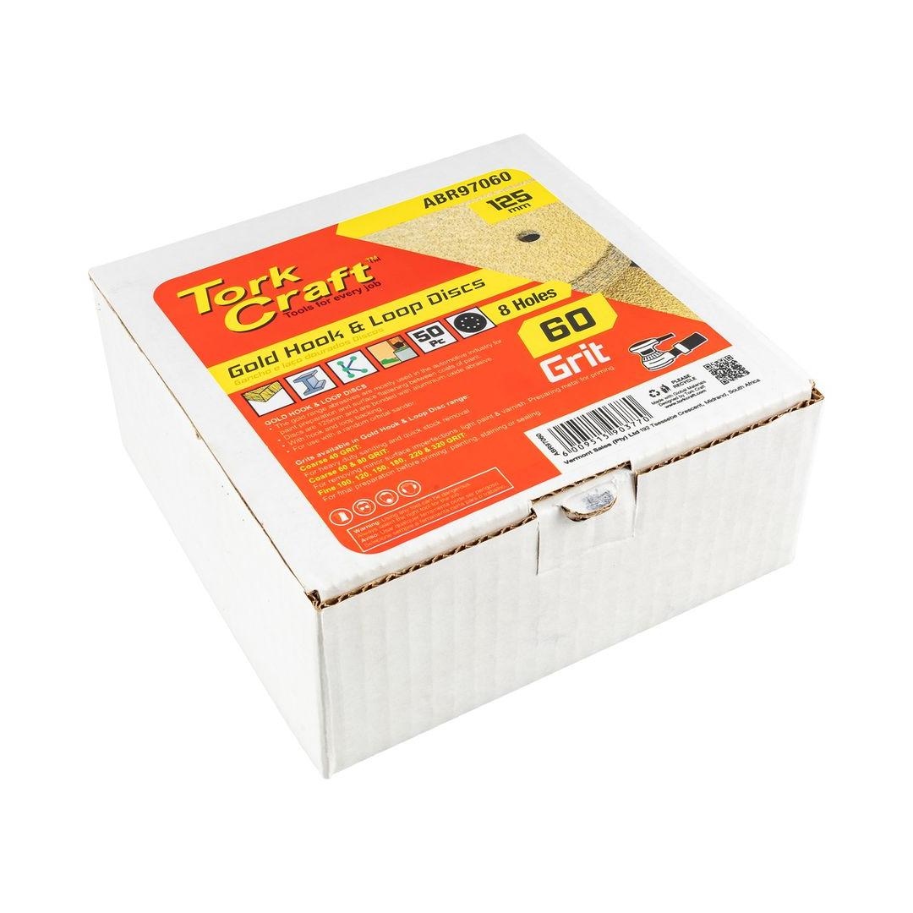
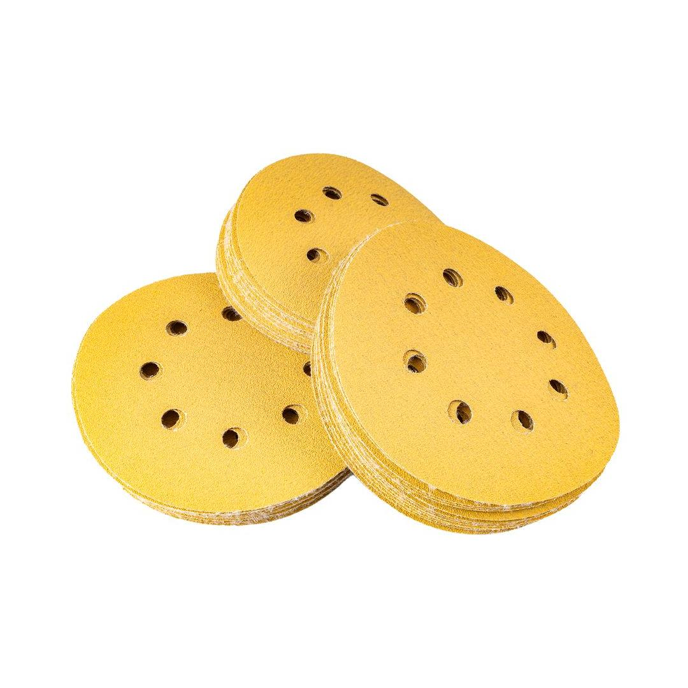

ABR97060


Grit: 60
Diameter: 125mm
Dust Extraction Holes: 8
This product offers a pack of 50 gold sanding discs designed for high-performance surface preparation. Each disc features a 60-grit abrasive for aggressive material removal, ideal for tackling tough jobs like removing paint, rust, and other imperfections. The 125mm diameter provides ample working surface, while the 8-hole design ensures optimal dust extraction and cooler operation. The hook and loop backing allows for quick and secure attachment to compatible sanding pads, enhancing efficiency and ease of use.
Application: